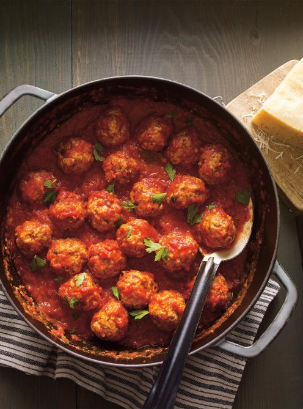

Tacos

This classic lasagna recipe is made with an easy meat sauce as the base.
Layer the sauce with noodles and cheese, then bake until bubbly!
This is great for feeding a big family and freezes well, too.
Ingredients
For the meat sauce:
- 3/4 cup chopped onion
- 5 cloves garlic, minced
- 1/4 cup olive oil
- 2 (28 ounce) cans whole peeled tomatoes
- 2 teaspoons salt
- 1 teaspoon white sugar
- 1 bay leaf
- 1 (6 ounce) can tomato paste
- 3/4 teaspoon dried basil
- 1/2 teaspoon ground black pepper
Meatballs:
- 1 pound lean ground beef
- 1 cup fresh bread crumbs
- 1 tablespoon dried parsley
- 1 tablespoon grated Parmesan cheese
- 1/4 teaspoon ground black pepper
- 1/8 teaspoon garlic powder
- 1 egg, beaten
Steps
- In a large bowl, combine ground beef, bread crumbs, parsley, Parmesan,
1/4 teaspoon black pepper, garlic powder and beaten egg.
- Mix well and form into 12 balls. Store, covered, in refrigerator until needed.
- In a large saucepan over medium heat, saute onion and garlic in olive oil until onion is translucent.
Stir in tomatoes, salt, sugar and bay leaf.
- Cover, reduce heat to low, and simmer 90 minutes. Stir in tomato paste, basil,
1/2 teaspoon pepper and meatballs and simmer 30 minutes more.